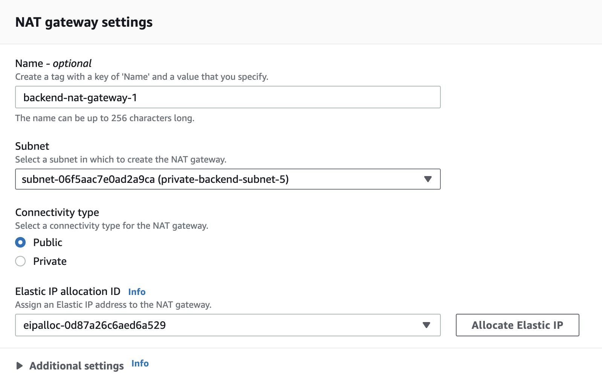

Building a Secure AWS Network: Protecting Instances with Private Subnets
Table of contents
- Building a Secure AWS Network: Protecting Instances with Private Subnets
- Table of contents
- 1. Introduction
- 2. Disclaimer
- 2. Introduction to VPCs and deploying a basic instance
- 2.1. VPCs
- 2.2. CIDR blocks, subnets and security groups
- 2.2.1. CIDR blocks
- 2.2.2. Subnets
- 2.2.3. Security groups
- 2.2.4. Route tables
- 2.2.5. Internet gateway
- 2.2.6. DNS resolution
- 2.3. Setting up a basic deployment
- 2.3.1. Creating the VPC
- 2.3.2. Enabling DNS resolution
- 2.3.3. Creating the subnets
- 2.3.4. Making the subnets public (route tables and Internet gateways)
- 2.3.3. Initial VPC setup
- 2.3.2. Creating our managed backend application
- 2.3.3. Creating our database instance
- 2.3.4. Basic deployment visualisation
- 3. Challenges of exposing instances to the Internet
- 4. Fixing the mistakes (new architecture)
- 4.1. Backend: Load-balancing the backend + NAT
- 4.1.1. Approach
- 4.1.2. Creating the subnets
- 4.1.3. Creating and configuring the environment
- 4.1.4. Backend design visualisation
- 4.2. Database: Protecting the database with a jump host + security group access rules
- 4.2.1. Creating subnets
- 4.2.2. Creating the database instance
- 4.2.3. Creating the jump host
- 4.2.4. Connecting to the database
- 4.2.5. Configuring traffic rules
- 4.3. Final architecture visualisation
- 6. Conclusion
1. Introduction
This post will cover various methods for enhancing security for AWS instances through the strategic use of public and private subnets. We'll explore the foundational concepts of Virtual Private Clouds (VPCs) and demonstrate how you can harness the capabilities of a VPC in conjunction with various network nodes to shield your systems from external threats. Later chapters will cover various scenarios, pinpointing potential challenges and their solutions in certain configurations.
Note that this article will focus exclusively on the communication channels between various network areas and nodes, as well as the rules governing interactions between the internet and the private network. Vulnerabilties stemming from the applications themselves or any other architectural issues will not be covered.
2. Disclaimer
This article will touch upon several advanced techniques in computer networking that readers should have a foundational understanding of to fully grasp the content. While we will provide explanation for most basic concepts and provide definitions, the reader should familiarize themselves with any new concepts they come across to fully understand the content.
Constructing your architecture incrementally often proves more efficient and less time-consuming than striving for a comprehensive build right from the get go.
2. Introduction to VPCs and deploying a basic instance
Note
Basic knowledge of computer networks is required.
2.1. VPCs
VPC (Virtual Private Cloud) is a virutal private network you own via your AWS account. In contrast to real, physical machines, routers and switches it is virtually constructed, but the concepts remain the same.
VPCs can be thought of as real networks with the same features by which they provide a structured way to deploy your AWS instances. By default, a VPC is logically isolated from the Internet effectively functioning as a separate network.
The AWS network is a collection of Availability Zones, which are physically represented as data centers. They are interconnected and they form the AWS network. These AZs are then grouped into regions. When we put all this together, we can visually represent the different areas and overlaps like so:

Visualisation shows a sample AWS region composed of three AZs. Inside the regions we have our private VPC that's spanning across three AZs (we can configure our VPC to reach one or more AZs). Using the internet gateway we can enable communication with the Internet (more on this later).
2.2. CIDR blocks, subnets and security groups
2.2.1. CIDR blocks
The basic concept of computer networks is that each node in a network is assigned a unique address by which we recognize it as a node. Just as each house in our street has a house number, each node in a computer network has a so-called IP address.
Armed with that knowledge, we can represent the scope of our private network as a range of IP addresses. A good analogy would be that in a street we would assign numbers to houses from 20-44, so the same logic would apply to networks - a VPC has a range of IP addresses.
Note
Basic knowledge of IP addresses is required. Use the following link to learn how IP addresses are comprised.
To keep things simple, we'll take only IPv4 addresses into account. Each IPv4 address consists of four 8 bit fields. Meaning the smallest address is 0.0.0.0 and the largest one is 255.255.255.255.
This separation of 4 distinct parts is very useful since we can easily subdivide our total IP range into sections. For example, we can say that some abstract distinct section of our network will have IP address range between 24.24.24.0 and 24.24.24.255. In this case the number of addresses this section has been assigned is 256 addresses.
We need a simple, formal way of representing these ranges. Our written example is fine, but we can condense this information into a structured, standardized format that computers can also read.
A CIDR block is a notation we can use to represent the IP ranges. Let's take a look at an example of a CIDR block:
denotes an IP range from 25.25.25.0 to 25.25.25.255.
The \(/24\) suffix indicates the count of consecutive leading 1-bits (from left to right) in the network mask. This just means the number of bits that are fixed.
Finally, we can now define our private network space with a CIDR block that has 16 static bits. An example would be:
2.2.2. Subnets
So far we have defined our VPC range. Referencing the image of above of defining a sample VPC space, we can notice different "subnets" inside the VPC.
Subnets are a powerful concept of dividing our network into distinct parts. This is extremely useful since it helps us organize our nodes inside the network.
Let us consider an example where we have multiple database nodes and multiple application nodes in our network. We will assign each node in the network its own rules for accessing other parts of the network. As our network expands this would become exponentially more cumbersome and difficult to manage.
Subnets allow us to set and define these rules of communication and access to a specific range of our network; then all nodes inside the subnet will adhere to these rules. This greatly simplifies managing our nodes.
2.2.3. Security groups
In addition to subnets, another pivotal aspect of securing our AWS architecture is the implementation of Security Groups. While subnets manage network segmentation, security groups take on the role of controlling inbound and outbound traffic at the instance level. They act as virtual firewalls that regulate the traffic allowed to and from instances associated with them.
Security groups operate based on rules that explicitly permit or deny specific traffic flows. These rules can be defined in terms of allowed IP addresses, port ranges, and protocols. Unlike network access control lists (ACLs), which operate at the subnet level, security groups are associated with individual instances.
By configuring security groups, you can create a strong defense mechanism to safeguard your instances from unauthorized access and potential security breaches. As you continue to explore the intricacies of AWS security, a comprehensive understanding of both subnets and security groups will be instrumental in designing a well-protected and robust environment for your applications.
At this point we have introduced the vital tools of controlling network ranges and assigning communication rules to those sub-ranges (subnets) and to the individual nodes themselves. Later we will apply these concepts on real world examples to see how to effectively use them to create a secure network.
2.2.4. Route tables
In the vast networking landscape of AWS, route tables play a central role in directing traffic flow. They contain a set of rules, called routes, that determine how traffic is forwarded between subnets, the internet, and other connected networks.
Each subnet in a VPC must be associated with a route table, which dictates the traffic routing for the subnet. A VPC is created with a main route table by default, but additional custom route tables can also be created. When a subnet doesn't have an explicitly associated route table, it falls back to the main route table.
Configuring the route table accurately ensures that your network's traffic reaches its intended destination efficiently. For instance, if you want a subnet to communicate with the internet, you would modify the route table associated with that subnet to include a route to an internet gateway.
2.2.5. Internet gateway
An Internet Gateway serves as a critical bridge, enabling communication between resources in your VPC and the internet. It offers a two-way portal: it allows the internet to access your instances (when permitted) and lets your instances access the internet.
To facilitate this connectivity, you must attach an Internet Gateway to your VPC and then configure the appropriate route in the associated route table. With this setup, EC2 instances in your VPC can directly communicate with the internet, as long as they have an Elastic IP or Public IP.
Remember, while the Internet Gateway paves the way for internet connectivity, the actual accessibility is governed by security groups and network ACLs, ensuring a layered approach to security.
2.2.6. DNS resolution
The Domain Name System (DNS) translates user-friendly domain names (e.g., "www.example.com") into IP addresses that machines understand. Within a VPC in AWS, DNS resolution is automatically enabled, allowing instances to resolve domain names to their corresponding IP addresses. When EC2 instances are launched, they are assigned both private and public DNS hostnames, provided they're in a subnet set to assign public IPs. Keeping DNS resolution and hostnames enabled in a VPC is crucial for many applications, especially those dependent on DNS for communication.
Warning
We have covered these concepts on a high-level and their implementation in a real AWS network are more complicated and introduce various little rules of application. In the later chapters we will create a real deployment and we will cover some of these, but I strongly recommend that you try to create these rules yourself. Be aware that full network configuration contains more rules and concepts.
2.3. Setting up a basic deployment
Let's create a simple deployment containing a database and a backend application.
2.3.1. Creating the VPC
We'll ignore the default VPC and create our own. We'll set our CIDR block as 24.24.0.0/24 as shown on the image below.

2.3.2. Enabling DNS resolution
Enable DNS resolution and DNS hostnames in the VPC settings.


2.3.3. Creating the subnets
After creating the VPC we'll create just one public subnet where our instances will live. We'll use CIDR block 24.24.1.0/24.

2.3.4. Making the subnets public (route tables and Internet gateways)
By default, all created subnets are private since they don't have access to the Internet. This is due to the default route table, which sets the communication rules for the subnet.
Firstly, let's create an Internet Gateway and assign it to our VPC.


Now our VPC has access to traffic from the Internet.
Create a new route table. We will associate this route table with the subnets we want to make public, so let's set the ruleset to the following traffic rules:
- Access to all space inside VPC
- Access to the internet gateway


Now the nodes inside the subnet can access traffic from the Internet.
2.3.3. Initial VPC setup
So far, we have the following configuration:

2.3.2. Creating our managed backend application
Let's create our managed backend instances. The node itself that will live in our VPC is a Linux EC2 instance, but we will use Elastic Beanstalk service to manage our instances.
Note
Elastic Beanstalk is an AWS service for managing and configuring various other AWS services, mainly used to orchestrate Linux machines. Learn more about it here.
Select the prefered platform, in this case Node will be used.
We'll configure it to deploy our instances inside our public subnet. Make sure to select the proper VPC and subnet. Since we'll directly serve traffic to our instance, make sure to check the Public IP address box to assign a public IP to our instance.


After finishing the configuration wizard, Elastic Beanstalk will spin up and configure our instances. Find the URL in the environment details screen to access the application.

This is how the web page should look like:

Warning
You may possibly encounter an issue while deploying the environment with misconfigured service roles. Take a look at this link for more information. Dont forget to select the instance profile!
2.3.3. Creating our database instance
To demonstrate a basic deployment of a database, we will deploy an instance running a relational database software. AWS provides a service for doing exactly that, called RDS (Relational Database Service). RDS wizard requires that RDS instances live in a subnet spread across two availability zones. Specifically we're required to create a subnet group.
So far we have created only one public subnet. Navigate to the VPC service and create another public subnet. Make sure it's placed in a different AZ compared to the first public subnet! Now that we have two public subnets in different AZs, navigate to RDS service and create a database subnet group that includes these two subnets.
Warning
Remember to assign the correct route table to the subnet, otherwise no traffic from the Internet can pass through to the instance.


Now we're ready to finally create the database instance. Navigate to the RDS service and launch the instance creation wizard. Make sure to properly configure the connectivity settings, including the correct VPC and subnet group. Make sure to enable Public access.
Note
For testing purposes I recommend using the free tier preset for instance class and storage.


2.3.4. Basic deployment visualisation
So far, we have created the following configuration:

3. Challenges of exposing instances to the Internet
Our current deployment is valid and works. But when we're designing a system for a production application we must always take security into account. With enough traffic we will eventually encounter malicious users and minimizing potential security risks is a must.
3.1. Principle of least privilege
3.1.1. Explanation
The Principle of Least Privilege (PoLP) dictates that in a computing environment, all nodes, modules, processes, users, or programs should have access only to the precise information required to execute their tasks. By confining privileges and access rights, we inherently limit the potential vulnerabilities of our system. This is a very powerful concept for minimizing possible attack surfaces our system design might leave open.
Imagine a network comprising several nodes. If an attacker compromises one node, the extent of their reach largely depends on the privileges associated with that node. Considering the principle of least privilege and applying it to our network, the intruder's access is limited, since they can potentially access only a minimal amount of information. This contrasts with a scenario where nodes have unrestricted access, granting the attacker access to the entirety of our network.
This idea can be taken as far as you want; for instance, you can specify rules for read-only or write-only actions.
3.1.2. Examples
User Accounts on Operating Systems: On most operating systems, there are user accounts with varying privileges. Typically, there are administrator accounts with full system access and standard user accounts with limited access. If a standard user account is compromised, the attacker can't make system-wide changes. This limitation is due to the PoLP; the standard account only has the necessary privileges to run applications and not to modify system settings.
Database Management: In a database system, not all users need the ability to edit or delete tables. Some might only require read-only access, while others might need more comprehensive permissions for data entry. By tailoring access to individual roles, you can ensure that even if a read-only account gets compromised, the attacker cannot alter the database's data or structure.
Web Applications: Consider a web application where users can view, post, and edit content. While every user can view posts, perhaps only the original poster can edit or delete their own content. Implementing the PoLP ensures that even if a user's session is hijacked, the malicious actor can only affect the content associated with that specific user and not content from other users.
4. Fixing the mistakes (new architecture)
So far we have created a working deployment and we have explained the security risks associated with it. Now we'll introduce new concepts in computer networking and apply them to create a secure environment for our applications. We will be sticking to an example of an application deployment and a database deployment.
4.1. Backend: Load-balancing the backend + NAT
4.1.1. Approach
Our current deployment consists of a Linux machine with a public IP, directly accessible from the internet. We aim to enhance its security by placing it within a private network. Instead of direct access, we'll introduce a gatekeeper - in our case, a load balancer - that mediates communication between the internet and our private machine.
We'll set up an Elastic Beanstalk environment to launch machines in a private subnet running our sample Node application. Through the configuration settings, we'll ensure the environment is load-balanced, with the load balancer situated in a public subnet. This setup allows the load balancer to be the public entry point, directing traffic to our private infrastructure. Although the EC2 instances are in a private subnet, they still need internet access for updates. To accommodate this, we'll associate them with a NAT gateway in the private subnet, allowing only incoming traffic.
Tip
Learn more about load balancers here.
Tip
Learn more about NAT gateways and how they work here.
4.1.2. Creating the subnets
To create our architecture, we need two public subnets for our load balancer. Create two appropriately names public subnets with the method shown in this article. We will also need one private subnet for our application EC2 instances, so create one private subnet.
Create a NAT gateway and add it to the private subnet.

4.1.3. Creating and configuring the environment
Once the subnets are ready to go, navigate to Elastic Beanstalk and launch the environment creation wizard. Choose the environment name and configure the environment:
- Choose a sample Node app as the desired platform
- In the networking settings:
- Choose your VPC
- Choose the desired private subnet
- Choose the appropriate security group
- In the Instance traffic and scaling:
- Choose the environment type as load balanced
- Set the load balancer as public
- Select the load balancer public subnets created earlier
The Elastic Beanstalk wizard will do the rest. After a successfull launch, the application should be accessible via the EB public URL.
Info
The mentioned configuration may take a substantial time to launch (10 minutes or more). Be patient.
4.1.4. Backend design visualisation

4.2. Database: Protecting the database with a jump host + security group access rules
4.2.1. Creating subnets
Firstly, let's create the private subnets for the database. We need at least two. In this case we'll them private-db-subnet-1 and private-db-subnet-2 and assign IPv4 CIDR blocks of \(24.24.2.0/24\) and \(24.24.3.0/24\).
Warning
Make sure the subnets have different Availability zones.
Then create the subnet group for the new database instance, consisting of these two subnets.
We'll need a public instance for our jump host, which we'll cover shortly. Create a public instance following the method shown earlier. Consider naming it appropriately, in this case we'll choose the name public-db-jump-host-subnet-1.
4.2.2. Creating the database instance
Create an RDS instance in your VPC and set the correct subnet group. At this point, the RDS instance will launch but it won't be accessible since it lives in private subnet space. We will make it accessible from the Internet via a jump host.
4.2.3. Creating the jump host
Note
A jump host configuration is not an ideal approach, but it's a great learning example to grasp different traffic rules and the idea of protecting network instances. It is a potential point of vulnerability as it's exposed to the internet. It's crucial to harden its security, apply timely patches, and follow best practices to minimize risks.
A jump host (or bastion host) is a special-purpose node (computer, virtual machine) in a computer network configured to withstand attacks and act as a gateway to access resources inside a private network from the external world.
In this context, we'll utilize the jump host as a bridge to connect to our RDS instance situated in a private subnet.
We'll configure our jump host as a Linux machine using the EC2 service. We'll launch a simple EC2 instance in the public subnet, exposed to the Internet. By configuring the SSH keys an outside user will be able to securely connect to a public node in our network, from which they'll be able to access protected nodes.
Note
Basic knowledge of SSH cryptographic protocol is required. Learn the basics here.
Let's create a Linux machine with EC2.
- Choose instance name
- Use Amazon Linux 2023 64-bit image or newer
- Choose t3.micro instance type (free tier eligible)
- Create a new key pair for login (by creating a new pair, the browser will prompt you to download the key)
- Configure the network settings
- Select your VPC
- Select the jump host public subnet as the desired subnet
- Set Auto-assign public IP to Enable
- Make sure the wizard assigns a new security group tp the instance by selecting the option Create security group
- Make sure the inbound security group rules allow SSH traffic on port 22 from anywhere (more on this later)
- Submit the form
Now the EC2 instance should boot up within a couple of minutes.
4.2.4. Connecting to the database
Now our jump host and database should be properly configured for the outside user to gain access via the secure node. To connect to the database the user can SSH into the secure node like so:
| Text Only | |
|---|---|
with the desired output:
| Text Only | |
|---|---|
This confirms correct configuration of the jump host.
Tip
For .pem files used for SSH access, you should set the permissions to be read-only by the owner. This ensures that the private key remains confidential and isn't accidentally modified.
You can set the correct permissions using the chmod command:
| Text Only | |
|---|---|
To securely access a database on a remote machine without exposing it directly, we can create an SSH tunnel. This technique involves forwarding a local port on your machine to a port on the remote database server, essentially making the database accessible as if it were running locally.
The command for setting up this SSH tunnel is:
| Text Only | |
|---|---|
- LOCAL_PORT: A free port on your local machine.
- REMOTE_DATABASE_HOST: The hostname or IP address where the database resides.
- REMOTE_DATABASE_PORT: The port the database listens to.
- JUMP_HOST_USERNAME: Username associated with the jump (or bastion) host.
- JUMP_HOST_PUBLIC_IP: The jump host's public IP address.
- PATH_TO_PRIVATE_KEY: Directory path to the SSH private key for authentication.
After setting up the SSH tunnel, connect to the database using your desired database tool or API as if it's on your local machine. Access it at localhost:_LOCAL_PORT_.
4.2.5. Configuring traffic rules
We have demonstrated how to protect a private database instance by not exposing it to the Internet directly, but rather provide access via a jump host. This is a huge improvement from the original design but there is still room to improve. We will be specfically focusing on security group rules for the jump host and the database to futher comply with the Principle of least privilege.
4.2.5.1. Jump host security group
Let's navigate to EC2, select the jump host, and review its security group.
So far, the jump host listens only for SSH traffic, which is the desired behavior. The potential security risk is that any user, from anywhere in the world, can attempt to connect to the jump host, denoted by the \(0.0.0.0/0\) source rule. While SSH itself is secure, limiting the source addresses can significantly reduce the risk of brute-force attacks. Our current outbound rules allow an attacker to potentially reach other parts of the network.
For inbound rules:
- Limit Source: Tighten the inbound rules by allowing only trusted IP addresses, such as your company's VPN, specific employee IP addresses, or other controlled networks. This minimizes the exposure to potential attackers by narrowing down the list of IPs that can initiate a connection.
For outbound rules:
-
Limit Destination: Outbound traffic from the jump host should be restricted to the necessary destinations. Specifically, it should be able to communicate only with the private IP address of the database instance and any other essential services. This configuration ensures that even if the jump host is compromised, the attacker can't use it as a platform to target other unrelated resources or systems.
-
Specify Port: While the jump host primarily serves as a bridge to the database, ensure that it's only allowed to communicate on the specific port your database listens on. This minimizes potential misuse of the jump host.
4.2.5.2. Database instance security group
Let's navigate to RDS, select our database instance, and review its associated security group rules:
For inbound rules:
- Limit Source: By default, avoid having a wide-open $0.0.0.0/0 source rule. Instead, only allow inbound traffic from trusted sources. The primary source should be the jump host's private IP, ensuring direct connectivity only through the jump host. Depending on your setup, you might also consider connections from other essential components or services. Specify Port: Ensure that only the specific port your database is listening on is open. This further reduces potential vulnerabilities.
For outbound rules:
-
Limit Destination: Your database instance should have a limited scope for outbound connections. It's best to only allow the necessary communication, which might include connecting to specific services or updates. Restricting the outbound traffic ensures that data can't be unexpectedly exfiltrated.
-
No Wildcard Rules: Avoid using wildcard rules that allow the database to connect to any IP on any port. Remember, you want to ensure that if your database were ever compromised, its potential to do harm is restricted.
4.3. Final architecture visualisation

6. Conclusion
Securing cloud deployments is an intricate task that requires methodical planning and execution. Throughout this guide, we've taken a dive into some foundational steps for improving the security of AWS Elastic Beanstalk and RDS instances. By placing our EB instances in private subnets, harnessing load balancers in publicly accessible spaces, and adding an additional layer of protection to our RDS databases with a jump host, we've made significant strides in fortifying cloud deployments on AWS.
However, it's essential to understand that this is merely an introductory guide. Real-world production environments often demand a myriad of additional techniques, strategies, and concepts to ensure comprehensive protection such as firewall configurations, intrusion detection systems, monitoring and incident response mechanisms.